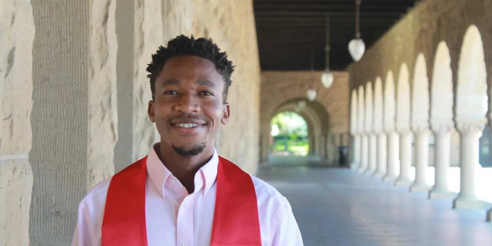

It feels surreal that I have finally put down my pen - I am done with school forever. I have vague memories of when I started this journey more than twenty years ago at Mafhikana Primary School in my home village of Kanye in the southern part of Botswana. I remember we were queued up and divided up into classes. The first person was in class A, second class B, third class C, and fourth class D, and it repeated until everyone was in a class. The very randomness that marked the start of my academic journey has been a significant part of it and over the last few years, has been a focus of my studies as I sought to understand how people can make optimal decisions under uncertainty. As I celebrate all that I have achieved these past two decades, I want to take this opportunity to thank a few of the many seemingly random individuals who have played a significant role in this journey.
My first thanks goes out to my family. I am especially grateful to my mother, sis Mos, for waking up earlier than she needed to for over 12 years in order to make sure when I woke up I had warm water ready so I could get ready for school. Warm water which she provided whether we had firewood or not, come rain or shine. My family had a tough life, but my mother shielded me from most of it so I could focus my attention on school. I grieve and lament that she is unable to celebrate this moment with me. I would also like to recognize my brother Donald, who volunteered his time and effort to teach me how to read, write, and count before I started school since my family could not afford to send me to school. He taught me more than I needed to know and that has made all the difference. Yes I am academically gifted, but my brother also gave me a head start - an advantage that has stayed with me for most of my academic career. More generally, I want to thank my siblings for their support and sacrifices in funding my extra-curricular activities, especially when they did not believe in them or see my vision.
Next, I want to recognize a few of my primary school teachers. As it will become apparent as this note unfolds, I have been blessed with many great teachers along my path. The first I want to recognize is my standard 2 teacher Mma Loeto, who convinced me that my intelligence was in the top 1% of the student she had ever taught - and my class was the last she taught before her retirement due to old age. She nicknamed me "Sparks" because she said I had the makings of a blaze if I continued to apply myself. At the time I did not understand her words, but as I look back I am grateful she did and even more grateful that my classmates adopted it as my nickname for a few years. I thank Mma Kefetoge, Mma Komanyane, Mma Stegling, Mma Gaowele, Mma Rauwe (Philip Moshote Memorial), and Mma Nkgelepang. The faith you placed in me by appointing me to student leadership positions and nominating me to represent my school at various events and competitions reinforced my belief that even someone from my background could shine.
Mookami Junior Secondary School is the place where the legend and the myth of Tumisang Ramarea was born. In primary school it was a well accepted fact that I was a smart genius but at Mookami I was revered. Even I was inspired by my story. When a teacher like Mr Batlhophi who has been teaching for a considerable amount of time is reminded of some of the greatest students he has ever known, the likes of Tumisang Madigele, it is hard to not be moved. The teachers at Mookami, including those who did not teach me, celebrated me but had high expectations of me. They did not let me off easily when I veered off the path. I cannot tell you the number of times my buttocks have received the cane only because I was not being Tumisang Ramarea enough. As a result of that encouragement, I scooped almost all the awards at each year's prize giving ceremonies. I was even awarded as the most well behaved student in my class. I remember my sister was shocked, but that is a story for another day.
There are too many people I am grateful for from Mookami but for now I want to mention a few. First my teachers Mma Tshwenyego, Mma Ndori (formerly Matthys), Mr Lewanika, Mr Mogobe, Mr Sekgwama (and family), Mrs Mopedi, Mrs Oraletse, Mr Hule, Mr Khumalo, Mma Mabote, Mma Dintweng, Mma Simane, Mma Phirinyane, Mr Mminakgomo, Mr Batlhophi, Mma Nyepetsi, and Mr Botuwe. Thank you for pushing me to the be the very best of me that I could be, in and outside the classroom. I also want to recognize the following teachers who did not teach me but were invested in my success: Mr Keitebetse, Mma Hule, Mr Dinake, Mma Letsatle, Mma Ntlhayakgosi, Mr Alfred, Mr Dinake, Mrs Lelliot, and Mr Shabani. One of my favorite things about Mookami is how the non-teaching staff were as invested. I want to thank the kitchen staff for always letting me get away with an extra slice of bread and Mr Bogatsu for allowing me to spend more time at the computer lab than I was entitled to.
Compared to Mookami, Seepapitso was a downgrade. My initial assessment of it was that the students lacked discipline and the teachers lacked motivation. Those who are close to me will tell you that I did not want to go to that school. I had big dreams of studying abroad and a school that ranks in the bottom 5 in the whole country was not the place to achieve those dreams - or so I thought. Doomed by my family's limited means, I was unable to go to a better school elsewhere. But by some random streak of luck, the teachers assigned to my class were some of the best at their subjects. Even when most teachers were out in the streets exercising their civic duty and right to protest for better working conditions, all but one of my teachers chose to stay and continue teaching. Yes I am grateful to my teachers for staying, but I am more grateful to them for buying into my dream and going out of their way to help me realize it. Especially for holding me to a high standard because they understood that to succeed on the path I desired out of Seepapitso would take a miracle and a half. Even the school head, deputy school head, and a few heads of house bought into my dream and gave me any resource my study group needed to succeed.
I want to thank Mr Kelobang for encouraging my curiosity and entertaining my questions, no matter how dumb they might have sounded. He reinforced the idea that just because I am smart does not mean I can not fail to understand. I am grateful to Mr Zeriua for allowing me to use the internet to get answers to questions he could not answer. It erased the expectation that my teachers should know everything, but allowed me to see them as individuals who are there to show me the way. The acquisition and application of the knowledge was up to me. I thank Mma Zeriua for instilling in me the habit of reinforcing my strengths through consistent and focused practice, and challenging myself further by inspiring me to pick up Additional Mathematics with only a few months left before the final exam. I am grateful to Mr Guga for welcoming me into his class so late in the program and not holding me to a lesser standard just because I joined late.
I thank Mr Ntsowe for teaching me to be proud of my roots and culture, especially the language. Mma Dinku brought the study of literature into my life and helped my soul see beauty in the world around me. Mma Lekwape taught me the value of self-respect and her support for my goals went beyond the classroom. In 2012 I won a national essay contest because she believed in me, even though I had only found out about it the night before the deadline. I am still amazed at how she took me to the city once to submit a scholarship application at her own expense. Mr Pine and Mr Leepile taught me to be a man. Mma Kutoro and Mr Modisagaarekwe were the anchors to many of my extra curricular activities. They were instrumental in instilling a desire to be of service to the world. I also want to thank Mma Modisane, Mma Kabalanyane, Mr Moffatt, Mr Tsae, Mr Molebatsi, Mr Tlole, Mma Harrison, Mma Basele, Mma Mokwadi, and Mma Modisa.
After Seepapitso I went to the United World College of Costa Rica. I want to thank the UWC Botswana National Committee for believing in me and moving heaven and earth in the ways that they did in order to send me to Costa Rica. I want to recognize Mogamisi Nkate, William Scheffers, Thebe Modikwa, Tidimalo Moseki, Brandon Bakwena, and Neo Modisi, among many others from and affiliated with the committee, who made this possible. I am grateful to the then UWC Costa Rica Admissions Director John Carpenter for taking a bet on me and making it possible for me to attend UWC. UWC was not an experience for the faint hearted, and yet I would not change anything about my experience. I believe it transformed me in the ways that it needed to, blessed me with a few lifelong friends, and opened additional opportunities for me.
The first teacher I want to express my gratitude to is Heidi Achong. Due to visa challenges, a few of us arrived a month late to school. Heidi did not just inform us of what we had missed, she set extra classes to help us catch up. She was committed to our success and continually encouraged us. I was happiest in Heidi's class learning Economics. Next I want to recognize Nat Taylor, who welcomed me into her Psychology class after I decided Biology was not for me. She entertained my foolishness in her classroom and together we started a few impactful projects outside the classroom. She taught me that I do not need to convince a whole nation to effect change, I just need at least one other person who is as committed as I am and the rest will take care of itself.
I want to thank Jay Terwilliger for being my number one cheerleader. He liked and commented on every single entry on my online portfolio, the predecessor to my personal website. Jay taught me to document my goals and work towards achieving those goals. He convinced me that by sharing these goals and progress with others who are invested in my success, I can create an accountability mechanism and a supportive network. Along similar lines, I want to thank Brian Wright for inspiring my current journaling practice. Although Brian was my TOK teacher, it is outside of TOK that he had the most impact on me. At every community meeting or presentation, I would always observe him taking notes in a notebook before making an intelligent comment or asking a well-thought out comment. He taught me the value of pausing to process information before reacting to it. I am now on my 20th journal since leaving UWC a little over 6 years ago.
Matt Spall bought me my first Moleskine journal - which I earned by writing a mediocre sonnet about Rio Celeste. While he was an excellent English teacher, I am most grateful to him for introducing me to the outdoors. On a few occasions, while those of us who could not afford to return home for the holidays were on the verge of boredom, he would lead a hike up to the windmills on the mountains around Santa Ana. I would not consider myself much of a hiker but I do spend a substantial amount of time outdoors thanks in part to his influence. Matt reinforced the idea that one of the ways we commune with one another is through sharing our favorite activities. Rodney Olguin taught me Mathematics but I am most grateful to him for sharing whatever wisdom he had gathered over the years. My other Math teacher, Russ Steponic, taught me the importance of holding on to one's faith even as others might not understand why they would believe in it. He played a big part in my acceptance of my true faith tradition.
I want to thank Paula Moran for holding me to a high standard and encouraging me to push myself in learning Spanish. I had two amazing Physics teachers, the cool Lizzle the Fizzle aka Liz Drotos and the no-nonsense Sandrita aka Sandra Morales. The both of them expected a lot from me and that allowed me to thrive. I am especially grateful to Sandrita for modeling to me what it means to know your worth and stand up for oneself where that worth is not being appreciated. She is one of the best teachers I have ever had - and I have had many great teachers. I want to thank Mr A aka Alfredo Antillon for teaching me not to take life too seriously and try to enjoy music along the way. When I grow up I want to be like Mr A! I also wish to extend my gratitude to Rene Sandoval for his lessons on leadership and encouragement to live with integrity.
I want to thank Juan Diego Martinez Fuentes for instilling in me a sense of responsibility and discipline over simple every day tasks. It is in that where I have found the joy of life. I also want to thank JD's family for their love and affection, it has carried me throughout my UWC days. My gratitude also goes to Ingrid Davalos for letting me soar, and making sure my last minute decision to apply to Stanford is executed well. I want to thank Renata Villers for helping me realize my brilliance and overcome my self-doubt in deciding which universities to apply to. While I ended up not getting into Harvard, working with her as part of my Harvard application helped me realize the ways in which I was underselling myself. I want to recognize Ivannia Brenes Flores and Maritza Araya for teaching me through our interactions in Zumba class to dance to my own rhythm - even if I am the only one who can hear the melody.
Marianela Ramirez, through championing the work of the Giámala Foundation, inspired me to be passionate about the causes that are close to my heart, remembering that consistency trumps once-off brilliance. Don Eduardo's prayers and sermons fortified my spirit while Rafa's jokes refreshed my soul. The tias and tios with their abundant love saw me through. I especially want to give a shoutout to tia Rosibel Naranjo Monge who always knew how to make my special rice and eggs meal because of my dietary restrictions. How can I forget tio Gerardo, tia Patricia and tia Ivannia Duran for always letting me have just a little bit extra food. I am also grateful for the other tia Patricia and her friend for always sharing their stories and allowing me the opportunity to improve upon my Spanish. To tio Raul, I send my thanks for modeling generosity and love. The tios and tias were the backbone of my UWC experience, and without them I could not be where I am today.
At Stanford I have had access to exceptional educators many of whom have had a formative influence in the trajectory of my life. The first person I want to recognize is my Pre-Major Advisor John Mallet for taking us to fancy dinners on Stanford's dime and pushing us to make the most of all the opportunities available to us at the university. He would be proud to know that I have done exactly that in the six years that I have spent on the farm. Among those opportunities, I spent my first summer in Sri Lanka learning from Dr Ewen Wang, Dr Suzanne Gaulocher, and Sachi Oshima. They reinforced my commitment to use my talents and interests towards collaboratively building more resilient communities. Professor Pam Hinds challenged me to think about how we can organize for good and Professor Tim Weiss took me under his wing to explore the ways in which entrepreneurship might be one way we might organize for good. Tim encouraged me to lean into my curiosity without being stuck by the lack of answers to the questions my soul wrestled with. That has made all the difference.
I want to thank Professor Mark Capelli for teaching me that Engineering is not just a professional path, but a way of thinking and problem solving. Then Professor Nick Bambos went a step further by emphasizing that modeling and control of engineering systems is an art. Seeing engineering through these two lenses is what put and sustained me on the path I took. A path I would pick again in a heart beat if I was given a do over. I want to recognize Professors Anat Admati, Sharad Goel, Jonathan Taylor, John Taylor, Edison Tse, Chris Markler, and Ramesh Johari for teaching me the importance of dedicating time to asking the right questions. When you have the right question, you have already solved half the problem. In finding the perfect solution, I thank Ali Rosenthal, David Hornik, and Patricia Nakache for teaching me to use an iterative and data-driven approach to ensure I learn quickly and cheaply. I do not have enough words to thank Professor John Lord, but one of the many lessons I have learned from him is the importance of starting with the basics and building up complexity once the foundation is firm.
Professors Mykel Kochenderfer, Elisabeth Pate-Cornell, and my advisor Ross Shachter taught me to reason about uncertainty with ease across different application areas. Professor Ashish Goel reinforced the lesson that my talents, no matter how humble, can make a difference through the COVID-19 class and subsequent directed research project. Professors Robert McGinn and Dale Nesbitt pushed me to examine the ethical implications of my decisions and work for today and always. As I am venturing off into the world, I feel empowered to make decisions about right and wrong at the very least. I thank Professor Matt Vassar for teaching me to communicate effectively. What good is my brilliance if I cannot communicate it to others? I also want to thank Professors Blake Johnson, Markus Pelger, Bob Sutton, Itai Ashlagi, Tom Kosnik, Sam Chiu, Robert Lemke Oliver, Lexing Ying, and Peter Diao, among many educators who have taught me in my time at Stanford.
While at Stanford, I began to actively interrogate and understand my African and Black identities. I want to thank Jan Barker-Alexander for helping me realize there was not just one way to be black and connecting me to resources that allowed me to safely interrogate my multi-faceted identity. I also want to thank Dr Laura Hubbard for teaching me that family is connected regardless of proximity, and home is where we land to replenish our fuel but also from where we launch as we soar to greatness. I want to thank Shelley Byron who, through many walks around the dried-up Lake Lagunita and a drive in an old car in Botswana, listened to my stories and connected me to opportunities that helped me grow. This is an understatement of my gratitude for Shelley but it will do for now.
I also thank Sephorah Green and Karen Cooper for always moving heaven and earth to make sure I pursued all kinds of opportunities. I cannot even count the number of countries I have been able to visit in the last six years thanks to them. Nothing teaches you about the world and about yourself as travel does. I want to thank all my Resident Fellows, including Janet Carlson, Tim Burke, Steve Stedman, and Corinne Thomas, for creating residential environments where I could thrive. I want to thank the dining staff at Arrillaga Dining for always looking out, for knowing when to give me a word of encouragement when my spirits seemed a bit low. It is those random acts of love and kindness of strangers that make a difference.
Having thanked my educators, I proceed to thank my friends, collaborators, and colleagues who made a difference along my journey. I want to once again say that I have been blessed beyond imagination when it comes to the people whose love and kindness I have known the warmth of. As such this is not meant to be an exhaustive list but to mention just a few individuals without whose presence all my academic achievements would not be possible. As I look back I am pleased that I have evolved from being competitive to collaborative. This is because I evolved from being arrogant about my intelligence to being confident about it. My being smart and the ways in which I am smart do not make me better than anyone, nor worse.
In my younger years I was always the number one student by the metric of grades. It was a source of pride and I often used it to try and convince my relatives to give me money. Despite being the undisputed overall number one student in my schools, a few competitors-would-be-friends always kept me on my toes because I knew if I slacked then they would gladly take the honors. I want to recognize Boineelo Mokopane, Pego Modise, Larona Baruti, Ophaketse Gaemengwe, Michael Mosweu, Alebakwe Kgabanyane, Gotla Motlogi, Kenamile Rabasimane, Tumelo Tshekoetsile, Lwaone Modisa, Lorraine Ketshabile, Wedu Malensi, Lame Rancholo, Naledi Kgosi, Batho Madigele, Atlang Lekoto, Maxwell Leboro, Taolo Ntloedibe, Kutlo Bolelang, Phatsimo Mhateng, Maatla Leburu, Koone Mahalelo, Mopati Wabobi, and a few others.
In senior secondary school I started to transition away from viewing these individuals as competitors and worked with a few of them in various study groups. I also want to recognize the following individuals not mentioned above who also were positive influences on my studies: Ame Mosope, Phemelo Lejone, Kgomotso Kereng, Masego Gopane, Galaletsang Nageng, Ketshephile Gothata, Moabi Otukile, Matshidiso Kabelo, Kefentse Ntlotlang, Koketso Marumo, Cindy Kgaodi, Kebaabetswe Mere. In UWC I had a few collaborators who I believe had the most impact in my studies that I want to recognize: Nishmed Cota, Kris Peev, Ramesh Gore, Andualem Urgessa Kelbessa, and Tiwalade Dairo.
I want to thank the following collaborators from my Stanford years from inspiring me and allowing me to shine: Elliot Helms, Matthew Mogensen, Claire Wilson, Jackson Eilers, Virgil Smith, Alice Kate Cummings, Dr Dare Ladejobi, Yuko Ono, Moratwa Chamme, Alison Logia, Thomas Nguyen, Michael Fisher, Neha Kumar, Suchana Costa, Zahra Hejrati, Hengameh Shams, Aisha Sharif, Maya Thompson, and Joshua Hanson. I also want to thank my favorite collaborator of all time and one of my best friends Madison Coots, without whom I cannot imagine my graduate studies.
I want to thank all my friends and all my well-wishers for their consistency over the years and their prayers. I especially want to recognize Lutfe Rahman, Chisomo Billy, Eric Musyoka, Phile Shongwe, Mostakim Habib, Lesego Mahatlane, Maria Awan, Bob Beth, Patty Beth, Owen Modeste, Sheetal Ramsurrun, Jalang Conteh, Emang Rabogadi, Ellie Koepplinger, Fabiha Fairooz, Eyasu Kebede, Jacob Randolph, Navya Konda, Aviva Meyers, Mansi Jain, Alexis Dowdell, Annalee Monroe, Vimbai Anda, Amber Lewis, Ciera Ybarra, Rhodalene Benjamin-Addy, Deborah Gordon, Pastor Paul Dreessen, Ms Dina Dreesen and Godiraone Legakabe. Last but not least, I want to thank my then girlfriend, Dionne, for her support over the last few months as I crawled towards the finish line amidst a global pandemic and other hardships.
So, in as much as I am proud of myself for the blood, sweat, and tears I have given to this journey, it is very clear that it has taken a village. Thank you everyone, we did it! This is where I get off the academics train but I can promise you I will never stop learning. I look forward to starting a new adventure in a month as an Associate Product Manager at Krikey. That will be a new season in my life! As such the next few weeks will be dedicated to closing out this concluding chapter of my life and resting in anticipation of the next one. While my next chapter will not be characterized by the frequent updates as this concluding one, I promise I will stay in touch. To formal school, it has been a pleasure!
← Return to Blog